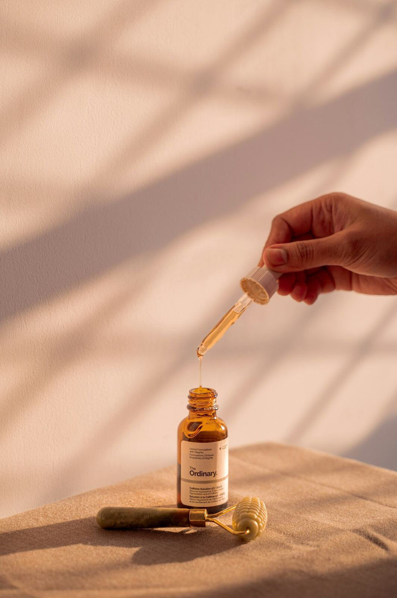

Best Scalp Care & Hair Growth Tools

Scalp care splits cleanly into two timelines: things that feel good and help circulation today, and things that need months of consistent use before you can judge them. These four picks cover both — an everyday shampoo brush and a popular scalp oil for the daily routine, and an electric massager and a laser cap for people ready to invest in the slower, longer-term approach.
| Product | Tier | Best for |
|---|---|---|
| Sndyi Scalp Massager Shampoo Brush | Everyday pick | adding a simple scalp-care step to a routine you already have |
| Mielle Organics Rosemary Mint Hair Oil | Routine pick | a widely-used scalp and hair oil with a large, established following |
| COMFIER Electric Scalp Massager | Relaxation pick | a more thorough circulation-focused massage than a manual brush gives |
| iRestore Essential Laser Hair Growth Cap | Serious pick | someone ready to commit months to an FDA-cleared hair growth device |
1. Sndyi Scalp Massager Shampoo Brush
Everyday pick
Similar style shown — see the exact model and finish on Amazon.
- Design: handheld silicone-bristle brush used in the shower to exfoliate and massage the scalp
- Amazon's Choice with tens of thousands of reviews across a wide price range of competitors
- Best for: a zero-effort addition to a shower routine you're already doing
2. Mielle Organics Rosemary Mint Hair Oil
Routine pick
Similar style shown — see the exact model and finish on Amazon.
- Design: a rosemary mint oil with biotin and castor oil, applied directly to the scalp and hair
- One of the best-selling hair oils on Amazon, with over 100,000 ratings and tens of thousands of monthly buyers
- Best for: a daily or weekly scalp treatment layered under or over other products
3. COMFIER Electric Scalp Massager
Relaxation pick
Similar style shown — see the exact model and finish on Amazon.
- Design: cordless electric massager with four kneading heads, 84 massage nodes, and two speeds
- Tangle-free design intended to work through hair rather than catching on it
- Best for: a more thorough circulation massage than fingers or a manual brush can deliver
4. iRestore Essential Laser Hair Growth Cap
Serious pick
Similar style shown — see the exact model and finish on Amazon.
- Design: FDA-cleared low-level laser therapy cap for hair thinning, alopecia, and receding hairlines
- Backed by a published clinical study showing visible improvement over several months of consistent use
- Best for: someone with a real hair-thinning concern who is ready to commit to months of regular sessions
Which one should you get?
Separate your goal from your timeline before picking: the shampoo brush and the hair oil are low-effort daily habits worth having regardless of outcome, the electric massager is mainly a relaxation upgrade, and the laser cap is the only one of the four making an actual hair-growth claim backed by clinical research — and the only one that asks for months of patience to judge fairly.
Frequently asked questions
How long does it take to see results from a laser hair growth cap?
Clinical studies behind devices like this typically measure results at 3 to 6 months of consistent, several-times-weekly use — shorter use isn't usually enough time to judge whether it's working for you.
Does rosemary oil actually help with hair growth?
Some small studies suggest rosemary oil may support hair thickness over time, comparable in a few trials to mild over-the-counter treatments, but the evidence is limited — it's reasonable to use as a gentle, low-risk addition rather than a guaranteed fix.
Can scalp massage alone regrow hair?
Scalp massage mainly supports relaxation and circulation; it may modestly support hair health over time but isn't established as a standalone treatment for significant hair loss — see a dermatologist if you're dealing with noticeable thinning.